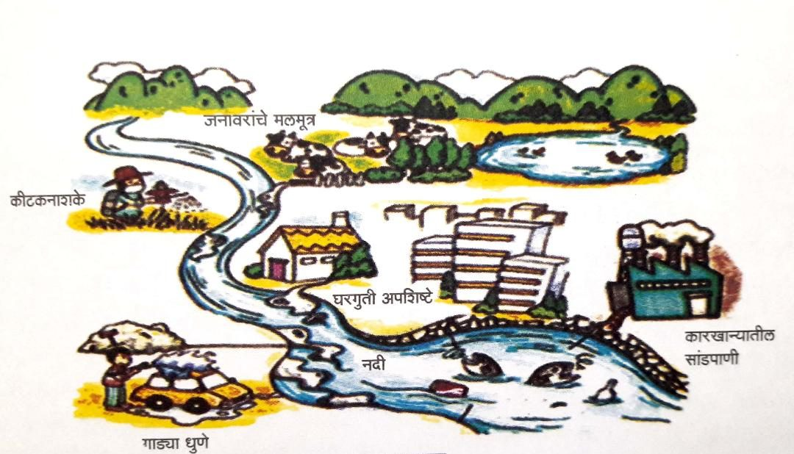
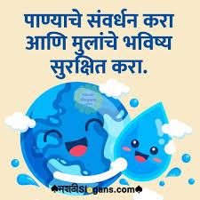

ही सर्व जगाला भेडसावणारी पर्यावरणीय गंभीर समस्या आहे. जल प्रदूषणामुळे पाण्यात विशिष्ट गुणधर्मांचे पदार्थ अशा प्रमाणात मिसळले जातात की, त्यामुळे पाण्याच्या नैसर्गिक गुणवत्तेत बदल होऊन ते वापरण्यास अयोग्य ठरते. जल प्रदूषणामुळे सजीवांच्या आरोग्यावर दुष्परिणाम होतात किंवा पाण्याची चव बिघडते, ते घाणेरडे दिसते वा दुर्गंधीयुक्त होते. मानवी कृती आणि अन्य कारणांमुळे पाण्याच्या नैसर्गिक गुणवत्तेत प्रत्यक्ष व अप्रत्यक्षपणे बदल होतात आणि पाणी कोणत्याही कारणासाठी वापरण्यास अयोग्य ठरते. या पाण्याला प्रदूषित जल म्हणतात. पाण्याचे प्राकृतिक, रासायनिक आणि जैविक गुणधर्म बदलल्याने मानव व जलीय सजीवांवर अपायकारक परिणाम करणारी जल प्रदूषण ही प्रक्रिया आहे.
नैसर्गिक पाण्यात एखादा बाह्य पदार्थ अथवा उष्णता यांची भर पडल्यास ते पाणी प्रदूषित होऊन त्याचा मानव, इतर प्राणी आणि जलीय जीव यांना अपाय होतो. जगातील बहुतेक देशांत जल प्रदूषण ही गंभीर समस्या बनली आहे. कॅनडा, चीन, भारत, जपान, रशिया, अमेरिका इ. देशांत ही समस्या तीव्रतेने जाणवते.
जलप्रदूषण
हे विविध मानवी क्रियांमुळे होते जे जलसंस्थांमध्ये हानिकारक पदार्थांचा प्रवेश करतात. जलप्रदूषणाच्या प्रमुख कारणांमध्ये औद्योगिक कचरा, कीटकनाशके आणि खते असलेले कृषी वाहून जाणे,
प्रक्रिया न केलेले सांडपाणी, तेल गळती आणि प्लास्टिक आणि इतर नॉन-बायोडिग्रेडेबल कचरा यांचा समावेश होतो.

पाण्यातील प्रदूषकांचे स्रोत पुढीलप्रमाणे आहेत :
(१) मानवी मलमूत्र व औदयोगिक कार्बनी अपशिष्ट
(२) रासायनिक खते
(३) कार्बनी रसायने
(४) खनिज द्रव्ये व रासायनिक अपशिष्टये
(५) सांडपाण्यातील व पाणलोटातील गाळ
जलप्रदूषण रोखण्यासाठी आणि कमी करण्यासाठी सक्रिय उपाययोजना करून, आपण जलस्रोतांचे संरक्षण करू शकतो, मानवी आरोग्याचे रक्षण करू शकतो, पर्यावरणाचे रक्षण करू शकतो आणि वर्तमान आणि भविष्यातील पिढ्यांसाठी शाश्वत विकास सुनिश्चित करू शकतो.
जलप्रदूषणाला संबोधित करण्यासाठी स्थानिक, राष्ट्रीय आणि आंतरराष्ट्रीय स्तरावर सर्वसमावेशक धोरणे आणि कृती आवश्यक आहेत. यामध्ये प्रदूषण स्त्रोतांवर नियंत्रण ठेवण्यासाठी नियम आणि अंमलबजावणी यंत्रणा लागू करणे, सांडपाणी प्रक्रिया पायाभूत सुविधांमध्ये गुंतवणूक करणे, शाश्वत कृषी पद्धतींना प्रोत्साहन देणे, कचरा व्यवस्थापन प्रणाली सुधारणे, जलसंवर्धन आणि प्रदूषण प्रतिबंध यावर जनजागृती आणि शिक्षण वाढवणे आणि सीमापार जलप्रदूषण रोखण्यासाठी आंतरराष्ट्रीय सहकार्य वाढवणे यांचा समावेश आहे.

जल प्रदूषणावरील उपाय खालीलप्रमाणे आहेत :
• जलशुद्धीकरण करणे.
• सांडपाणी व मैला पाण्यात सोडण्यापूर्वी विशेष प्रक्रिया करणे.
• पिण्याच्या पाण्याचे नियमित परीक्षण करणे.
• पाण्यातील रोगकारक जीवाणूंच्या संख्येत वाढ होणार नाही, यावर नियंत्रण ठेवणे.
• कवकनाशके, कीटकनाशके व कीडनाशके यांचा वापर मर्यादित करणे अथवा टाळणे.
• कृत्रिम खतांचा वापर कमी करून सेंद्रिय खतांचा वापर वाढविणे.
• पिण्याच्या पाण्यातील रसायनांच्या प्रमाणाची विशिष्ट मर्यादा असते. या सहज मर्यादेपेक्षा अधिक प्रमाणात रसायनांची वाढ होऊ नये, यासाठी योग्य ती दक्षता घेणे.
• किरणोत्सारी अपशिष्टे विशिष्ट जागी बंदिस्त करून ठेवण्याच्या पद्धतीचा अवलंब करणे.
• औष्णिक जल प्रदूषणामूळे जलाशय किंवा समुद्रातील पाण्याचे तापमान २० से.पेक्षा अधिक वाढणार नाही, याची खबरदारी घेणे.
• खनिज तेलामुळे होणाऱ्या जल प्रदूषण समस्येवर उपाययोजना आखणे.